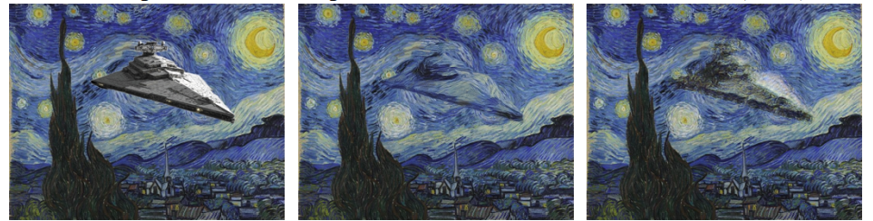
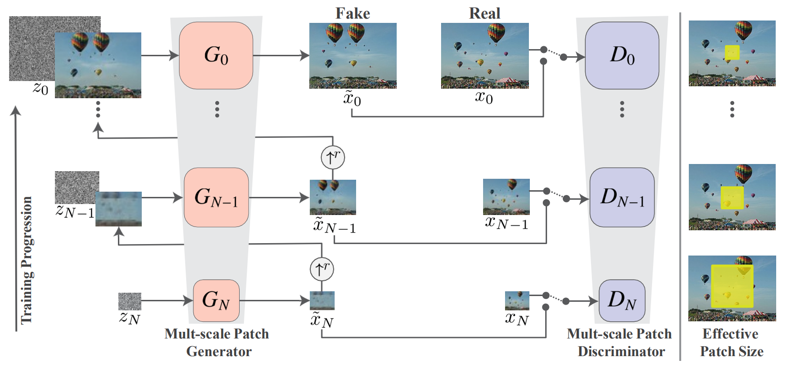
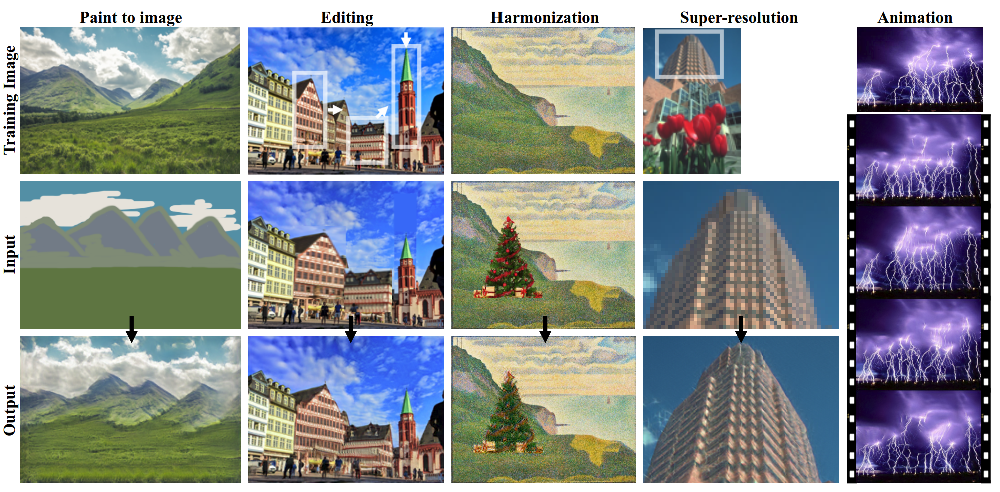

SinGAN
飞船驶过梵高的星空

大雁掠过夕阳，留下惊鸿一瞥
乌云蔽日，草木涌动
是不是很炫酷？
其实，比这更酷的是：仅使用一张图片便可实现以上所有效果，甚至更多。
这一切的背后，都是SinGAN的功劳。
ps：不想看原理的小伙伴可以划到本文最后一部分，直接动手实现这些好玩的操作，起飞~
SinGAN介绍

SinGAN由多个不同尺度的生成器和判别器组成，如上图所示。对于每一个尺度，都会进行一次与普通GAN训练类似的训练过程。
具体地，从下往上看：
在最开始训练时，当前尺度的生成器$G_N$接受噪声$Z_N$，输出生成图像$\widetilde{x}_N$；然后将$\widetilde{x}_N$与真实图像下采样得到的$x_N$一起输入判别器$D_N$，$D_N$负责判别输入图像是真实的还是生成的；(对应图中倒数第一行)
在第二次训练时，当前尺度的生成器$G_{N-1}$接受两个东西：噪声$Z_{N-1}$和上一阶段生成的$\widetilde{x}N$的上采样结果，输出生成图像$\widetilde{x}{N-1}$；然后将$\widetilde{x}{N-1}$与真实图像下采样得到的$x{N-1}$一起输入判别器$D_{N-1}$，$D_{N-1}$负责判别输入图像是真实的还是生成的；(对应图中倒数第二行)
在第三次以及之后的训练中，都重复类似的步骤，直到生成的图像尺度达到预期大小，训练就结束了。
需要注意的是，判别器在进行判别时，仅仅根据输入图像的局部（感受野）而非全局，且这个感受野随着训练的进行在缩小，如图中最右侧一列所示。
可以理解为，在开始时，较大的感受野可以更好的把握全局的特征，而随着训练的不断进行，图像的细节逐步被优化，此时判别器只需关注细节优化的效果即可。也就是说，不同训练阶段的判别器的任务是不同的，一开始需要先把握全部的特征，然后在后续过程中去优化每个细节。
SinGAN的损失函数
SinGAN的损失包含两部分：对抗损失+重构损失
对抗损失是原始GAN就具备的，在这里，作者使用了WGAN-GP的损失函数衡量对抗损失。关于WGAN-GP的详细讲解，请阅读我们之前推送的文章（丢个传送门：戳我！）。
重构损失迫使生成的图像和原始图像下采样版本之间的差距不能太大，从而保证了生成图像的有效性。另外，通过施加的随机噪声来保证生成图像的多样性。
#SinGAN的应用
手绘图转换为自然图片，图像编辑，图像超分辨率，以及在本文开始展示的短视频等等，都可以使用SinGAN来完成。

官方的代码给出了实现以上效果的详细步骤，很简单，这里来介绍一下。
首先，进入https://github.com/tamarott/SinGAN，将整个项目文件Clone下来到本地，然后选择一张你想要进行训练的图片，放入`SinGAN-master\Input\Images`路径下，打开终端，输入`python main_train.py –input_name 就开始训练了，比如我选择的图片名字叫pic.png，那么就输入python main_train.py –input_name pic.png`。
训练完成后，输入python animation.py --input_name pic.png ，经过一段时间的就能得到本文最开始展示的效果了，它被保存在Output/Animation/pic。
更多操作可以自行去上述GitHub查看。